OM
ALIVE FESTIVAL ER TRE SOMMERDAGE I THY FULDE AF MUSIK, KUNST OG UDFLUGTER.
Vores mission er at skabe dét øjeblik, hvor vi overraskes, hvor horisonter udvides og fordomme nedbrydes. Det øjeblik hvor kultur opstår – uanset om det er med musik, kunst, natur, lokalmiljø eller mellem mennesker – og hvor vi inspireres til at tænke nyt.

Hver juli smelter storbyboere, kunstnere og en stærk ungdomskultur sammen til et nyt, kreativt og mangfoldigt lokalsamfund i Thy, hvor vi kommer hinanden ved og vækker noget nyt til live i os selv.

Efter vandreture, surfskole eller bryghusbesøg bringer vores gæster energien fra Limfjorden, Vesterhavet og Nationalpark Thy med tilbage på festivalpladsen. Her vandrer de mange Thy’ske oplevelser videre fra mund til mund, mens gæsterne går på opdagelse i det levende kunstprogram og crowdsurfer sig gennem aftenens koncerter.

Stemningen fra scenerne skifter mellem rå undergrundstechno, varm solskinspop, rituel afro-beat, fræsende rockguitar, velkendte ørehængere og helt smalle eksperimenter. Store navne fra ind- og udland deler scene med de skarpeste up-and-comers fra hele genrepaletten, mens mens Alive’ere indtager hjertet af Thy for at danse under åben himmel hele weekenden

FORENINGEN THY ALIVE – KULTUREN OG VISIONEN BAG

FORENINGEN THY ALIVE – KULTUREN OG VISIONEN BAG
Når du tager på Alive Festival, er det Foreningen Thy Alive, der byder dig indenfor. Vi er cirka 80 frivillige ildsjæle, der hele året arbejder for, at hver festival bliver bedre end den foregående.
Vi vil vise, at store kulturoplevelser og meningsfulde fællesskaber gror der, hvor idéerne og engagementet er. Vi tror på, at unge mennesker med legesyge og kreativitet kan få store ting til at ske – og udvikle sig selv i processen. I Foreningen Thy Alive knokler vi for at give gæsterne de bedste festivaloplevelser. Samtidig arbejder vi også altid for at lave festival på en måde, som er sjov for dem, der skaber den. Det er det, vores fællesskab handler om.
Du kan blive medlem af Foreningen Thy Alive og være med til at forme retningen for Alive Festival. Du kan se vores aktuelle bestyrelse under kontakt. Som medlem får du løbende opdateringer fra bestyrelsen året rundt samt stemmeret til den årlige generalforsamling i november.
Ambitiøs frivillighed
Når du deltager på Alive Festival, inviterer vi dig også med ind i fællesskabet blandt de frivillige, der skaber Alive. I 2019 var cirka en femtedel af gæsterne på Alive frivillige og på denne måde medskabere af festivalen. Vi tror på, at det giver en særlig Alive-stemning af ejerskab og ansvar for, at alle får en god oplevelse.
Vi har i løbet af 12 år arbejdet på at knække koden til at forene ambitiøs frivillighed med professionel festivalvirksomhed. Det starter med de helårsfrivillige, i Alive kaldet 365’ere. For os er det afgørende, at disse frivillige inddrages og har stor indflydelse på, hvad vi laver på Alive. På den måde holder vi liv i den oprindelige Alive-ånd, hvor ideerne fra engagerede ildsjæle bliver til en festival i Thy.
Centralt for inddragelsen af de frivillige er vores cirka tre arbejdsweekender fordelt hen over året. På arbejdsweekender sætter vi vores hjerner i frigear: udvikler nye formater for kunstneriske festivaloplevelser og drøfter i dybden, hvordan vi vil udvikle Alive Festival. Og bagefter knokler vi så med at finde på måder at realisere ideerne.
Vil du gerne være med i det frivillige frivillige fællesskab i Alive og lave festival året rundt? Så skriv til frivillig@alivefestival.dk. Har du lyst til at læse mere – eller måske bare tage en tjans under afviklingsdagen – så se mere på bliv frivillig.
TIDLIGERE FESTIVALER
Historien rækker mere end ti år tilbage og fortæller om en forvandling fra spæd, græsrodsbaseret musikfestival til fuldvoksen festival for nye opdagelser med stærke rødder i den Thy’ske muld.